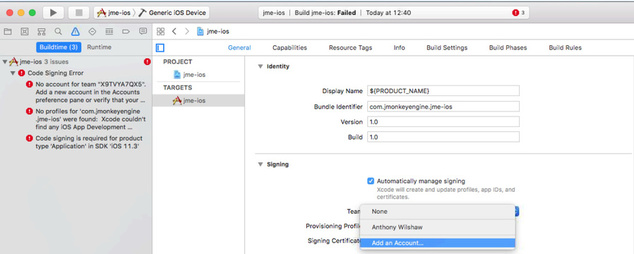

iOS Deployment
To use iOS deployment you need a computer running MacOSX and a version of Xcode 4.0+ installed. To deploy to a device or the Apple App Store, you need an Apple developer account.
Note that at the moment iOS deployment is in alpha state. |
iOS deployment works via cross-compilation to native iOS ARM code, there is no virtual machine running on the device. The Avian JVM supports this feature while maintaining general compatibility to OpenJDK and JNI for native access. The minimum compatible iOS deployment target is 4.3.
After creating a Basic Game project in the jMonkeyEngine SDK, add the iOS library by RMB selecting your project and navigating to and when ready Add Library.

To install the iOS deployment plugin, go to and under “Available Plugins” select:
If you dont see it there, check under the “Installed” tab as it may already be activated. |
Enabling iOS deployment
To enable iOS deployment, go to the project settings and under select:
Enable iOS deployment
If there is no number present then you need to install XCODE. In this example, my SDK version is 11.3 and I’m using XCODE version 9.3

Then adapt the application ID and press OK.
After enabling deployment, a new ios directory is created in the project root that contains a project and a src folder. The ios/project folder contains an Xcode project that you will use to build and run the final iOS application for both iPhone and iOS. The ios/src folder contains java and native source files for bridging iOS and native code, you can add .java and .m files with your own iOS code here.
When you enable iOS deployment for the first time or any time that the Avian library and OpenJDK is updated, they will be extracted to your SDK settings folder, wait until it has been extracted before building an iOS-enabled project. |
Building the iOS binaries
Compile your project. The iOS binaries are automatically built when you have iOS deployment enabled and build your project in the jME3 SDK.
When the iOS binaries are built, all needed classes, including a complete copy of the OpenJDK classes are run through a proguard process that strips out the unnecessary classes for the project and optimizes the code for the platform. This happens without changing the naming structure so that reflection etc. still works. If necessary, adapt the proguard options in the ios properties file.
After the iOS classpath has been created the avian compiler is used to create a native .o file from the classpath for both arm (device) and i386 (simulator). Furthermore the other needed avian .o files are extracted and a library list is compiled which is referenced in the Xcode project.
If an error occurs about jni.h not being found, either install the SDK for 11.3 in XCode:
Run this command in terminal:
xcode-select --install
or set the header search path in the XCode project settings, in the default project thats
/Applications/Xcode.app/Contents/Developer/Platforms/MacOSX.platform/Developer/SDKs/MacOSX11.3.sdk/System/Library/Frameworks/JavaVM.framework/Headers/
When it’s compiled successfully, load the XCODE PROJECT into XCODE, which is located in the IOS/PROJECT folder. As mentioned above, my SDK version is 11.3 and I’m using XCODE version 9.3
Running and deploying the application
To run the application, open the Xcode project under ios/project in Xcode and press the run button. You can make changes to the UI and native invocation classes in the Xcode project as well. From here you can also deploy the application to your devices or the App Store.
You should also adapt the project settings like application name and registration package in Xcode before deploying the final application.
First change the selected “TARGET” at the top of the screen from
iPhone 7 PlustoGeneric iOS Device. This is so we can do a full build. If you want to run it in a simulator then you can change it back later.
From the “PROJECT” menu click BUILD and the build will fail. Click the ISSUE NAVIGATOR button to show the compilation errors.

We can see here that the “Developer” account is missing, the project settings are out of date and there is a missing image for Retina 4-inch support.
Click Validate Project Settings followed by PERFORM CHANGES to accept all the suggested amendments.

Click on the Missing Image warning and XCODE will automatically add a placeholder for you.

Add your iOS developer account details by clicking on the target and then the Account Drop down.

Now click the “PROJECT” menu and “BUILD” again and it should compile now but fails at the linking stage.

We need to amend the linker search paths.
Click on PROJECT NAVIGATOR.
Highlight the top row (JME-IOS).
Click jme-ios under “PROJECT” (Not “TARGETS”).
If you have done it correct then you will only see “INFO” & “BUILD SETTINGS” at the top.
Select BUILD SETTINGS.
Scroll down to “LINKING” section.

Double click on OTHER LINKER FLAGS.

Double click on the line referencing “i386” and change it from:
…/…/build/ios-i386/libs.listto
…/…/build/ios-x86_64/libs.listAdd the additional flag for “ARM64” sub type issue introduced in iOS SDK 11.
With nothing selected click on the + sign and a new entry will be added at the bottom.
In here add:
-force_cpusubtype_ALL
Your other linker flags should now look like this…

Disable “BITCODE”.
Click on PROJECT NAVIGATOR.
Highlight the top row (JME-IOS).
Click jme-ios under “TARGETS” (Not “PROJECT”).
If you have followed the directions correctly, then you will see General/Capabilities/Resource Tags/Info/Build Settings/Build Phases/Build Rules at the top.
Select BUILD SETTINGS.
Scroll down to “BUILD OPTIONS” section and change “ENABLE BITCODE” to “NO”.

From the “PROJECT” menu click "BUILD" and the project should build and link fully.
To publish to the “APP STORE” you select the “PROJECT” menu and “ARCHIVE”.
This will generate the App Store Archive and show in the organizer screen.

Click Upload to APP Store and away you go.
Creating native and java code for iOS
To bridge between native and java code, JNI is used like in a normal java application. The ios/src folder is for Java and C/Obj-C source files that are specific to your iOS application. In these java files you have access to the full project classpath as well as the iOS-specific jME3 classes.
The JmeAppHarness.java class is initialized and called from native code through the default project and you can extend it to perform other native operations. It has a simple native popup method. The JmeAppHarness.m file contains the native method needed for that popup.
Effectively native code can reside in both the Xcode project and in the ios/src folder. To keep the dependencies clean and make code reusable you should try to put generic native code that does not depend on the Xcode project in the ios/src folder. You can also mix and match ARC and non-ARC code through this by converting the main project to use ARC and putting code with manual memory management in the ios/src folder.
Java code for iOS should be in the ios/src folder as well for clean separation, its also the only place where they will be compiled with a reference to the iOS specific jME classes. For information on how to connect your application code and device specific code, see the notes in the android deployment documentation.